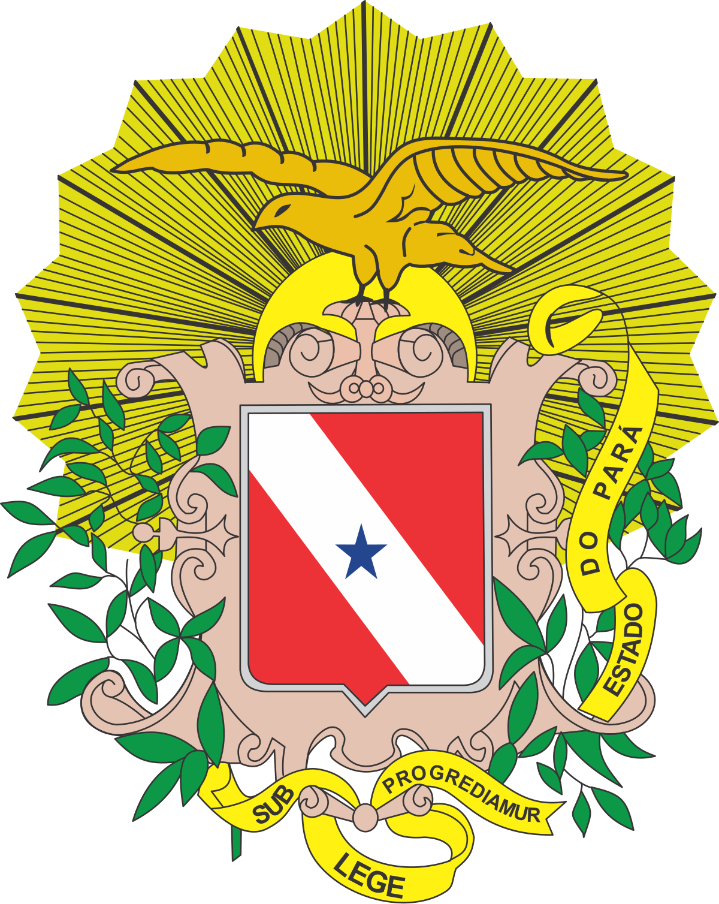

Plataforma oficial de governança ambiental, geoprocessamento e transparência da gestão do patrimônio natural paraense. Regulamentação estrita da Lei Estadual nº 10.306/2023 e sincronização ao ICMS Verde (Decreto nº 1.064/2020).

Alinhamento pleno da governança entre o órgão central (SEMAS) e o órgão executor (IDEFLOR-Bio).
A **SEMAS** atua como Órgão Central responsável por organizar e manter o sistema (Art. 68 da Lei nº 10.306/2023), enquanto o **IDEFLOR-Bio** atua como Órgão Executor operacional.
Portaria Conjunta SEMAS/IDEFLORContagem estrita de prazos recursais em **15 (quinze) dias úteis**, garantidos o contraditório, a ampla defesa e o efeito suspensivo nos termos da **Lei Estadual nº 8.972/2020**.
Art. 83 da LEPA/PASEMAS como **Controladora** dos dados e IDEFLOR-Bio como **Operador** (Lei nº 13.709/2018), além de proteção do patrimônio genético e conhecimento tradicional (**Lei nº 13.123/2015**).
Capítulo VI do DecretoCronograma operacional unificado para apuração, análise, julgamento de recursos e repasse à SEFA/PA.
Envio do pacote digital com Hash SHA-256 e Selo de Tempo ICP-Brasil.
Admissibilidade e notificação para diligência em 5 dias úteis (vícios sanáveis).
Avaliação técnica conclusiva e valoração de quesitos pela CT-SEINUC.
Publicação no DOE e abertura do prazo recursal de 15 dias úteis (LEPA).
Homologação da SEMAS e encaminhamento definitivo do índice à SEFA/PA.
Estrutura de dados modular padronizada com validação automatizada via JSON Schema.
Cadastro sistemático dos aspectos abióticos e bióticos da Unidade de Conservação.
Bases vetoriais padronizadas estritamente alinhadas ao dicionário DBF oficial do IDEFLOR-Bio.
Instrução da governança local, reuniões dos Conselhos e monitoramento dos prazos legais.
Cadastro dominial e acompanhamento da regularização fundiária de UCs e RPPNs.
Disponibilização automatizada por ciclo anual (WMS, WFS, WCS e CSW) para SIEPA, ITERPA, SEMAS e SEFA.
Renderização de mapas dinâmicos das UCs para a Cartografia Oficial do Estado (Art. 111).
Download e consumo de vetores brutos (GeoJSON, Shapefile, KML) por órgãos ambientais parceiros.
Catálogo oficial de metadados geográficos segundo o Perfil MGB da Infraestrutura Nacional de Dados Espaciais.
Em observância ao Art. 67, § 6º da Lei nº 10.306/2023, as coordenadas exatas de espécies criticamente ameaçadas (CR) são mascaradas em polígonos de quadrícula regional de 10 x 10 km nos geoserviços públicos (WMS, WFS, WCS e requisições GetFeatureInfo).
Acesse os documentos regulamentares finais em formatos Markdown (.md) e Word (.docx) formatados na norma ABNT NBR 14724:2023.
Texto final regulamentando governança, rito LEPA, ICMS Verde, sigilo e SisGen.
Requisitos de arquivos (PDF/OCR 50MB, Shapefile SIRGAS 2000 200MB) e contingência.
Dicionário de dados, atributos DBF oficiais e esquemas JSON de validação (Módulos I a IV).
Protocolo digital, Hash SHA-256, recibos com selo de tempo e checklist de triagem.
Requisitos dos Módulos A, B e C, WMS/WFS/CSW INDE e diretrizes de mascaramento.
Exame de auditoria completo (4 rodadas de análise) com a Parte IV de Certificação de Aprovação.